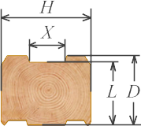

Этапы производства

Если у круглого бревна срезать четыре "горбушки", получится брус. Затем придадим двум противоположным поверхностям бруса геометрический профиль, и получим совершенно новый строительный материал.
Профилированный брус имеет сложное сечение, в котором есть посадочная головка, утеплительные пазы, шипы, плотно прижимающие межвенцовый утеплитель.
Профиль рассчитывается таким образом, чтобы дождевая вода не проникала между брусьями, поэтому стены оказываются защищены от возниковения очагов гниения.
Срубы из профилированного бруса не нуждаются в конопатке, а расход межвенцового утеплителя минимален.
| Эскиз бруса | Толщина бруса H, мм | Рабочая высота L, мм | Высота бруса D, мм | Ширина утеплителя D, мм |
|---|---|---|---|---|
|  | 95 | 135 | 145 | 95 |
| 135 | 135 | |||
| 145 | 145 | |||
| 50 | 50 |
| Параметры | Толщина бруса H, мм | Рабочая высота L, мм | Высота бруса D, мм | Ширина утеплителя D, мм |
|---|---|---|---|---|
| Кол-во бруса длиной 6 м в 1 м³ | 95 | 95 | 95 | 95 |
| Объем 1го бруса в 6 м, м³ | 135 | 135 | 135 | 135 |
| Общая длина бруса в 1 м³,м | 145 | 145 | 145 | 145 |
| Масса 1го бруса длиной 6м, кг | 50 | 50 | 50 | 50 |